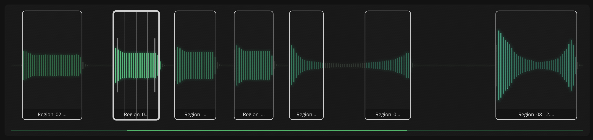
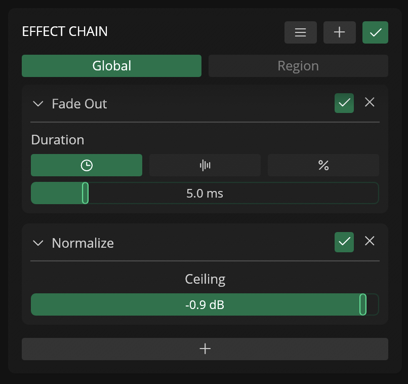
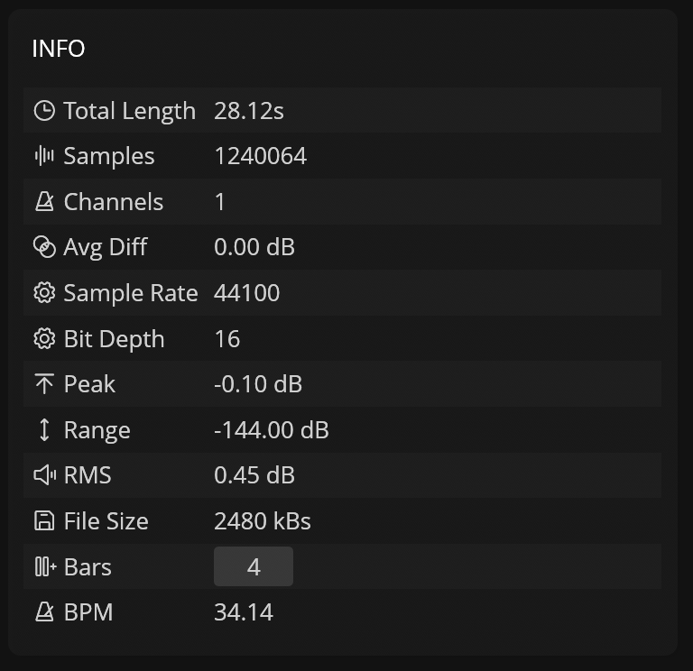

My Docs
Usage
File
Supported Formats (Import / Export)
SA_EDITOR currently supports the following formats:
| Format | Import | Export | Limitations |
|---|---|---|---|
| WAV | ✓ | ✓ | 16 or 24 bits |
| AIFF | ✓ | ✓ | 16 or 24 bits |
| FLAC | ✓ | x | - |
| MP3 | ✓ | x | - |
File Structure
Each files open in SA_EDITOR includes information such as:
-
File Name
-
Audio Buffer
-
Path
-
Export Settings
-
Undo History
Export Settings
The export settings of each file define the file format (WAV / AIF), sample rate, bit-depth, and filename suffix combinations that will be used when exporting the file and it's regions.
When opening an existing file, SA_EDITOR automatically includes an export setting that matches the source file.
Workspace
The Workspace in SA_EDITOR is defined by the group of currently open files.
The contents of the current workspace can be saved and recalled via the Save Workspace and Load Workspace actions.
Regions
Regions are sections of a file that can be processed and exported independently, and defined by a name, start / end sample positions, and a list of (local) effects.
Local effects are applied only to the specific region they belong to and do not affect other regions or the global project settings. Each region can be processed with its own set of parameters, allowing for targeted audio manipulation within the file.
Creating Regions
Regions can be created in different ways:
-
Mouse Selection: Click and drag on the file waveform to create a selection, then click on the selection to create a new region.
-
Detect Regions: Automatically identifies regions based on audio gain levels. -
Detect Transients+Create Regions from Transients: Identifies transients within the file and generates regions between them. -
Slice: Divides the file into a specified number of regions of equal length. -
Lua Scripting: Enables the creation of regions via custom scripts using the integrated Lua Editor.
Editing Regions
The start and end points of a region can be adjusted by clicking and dragging on either end of the region in the waveform or via the start and end numbers in the Regions list.
Regions can also be resized using the Resize Region function, which lets you adjust the region length based on samples, bars, beats, time (ms), size (kB) or factor.
Renaming Regions
Regions can be renamed individually by clicking on the region name in the Region list or in batch using the Rename Region function ().
The Rename Region feature lets you rename all regions in a file based on a naming template and any of the different variables available (such as the region number, length, sample count, sample rate, etc).
Variables used in the Name Template are automatically converted to their appropriate values during renaming.
Renaming Variables
| Variable | Description |
|---|---|
{name} |
File Name |
{region} |
Current Region Name |
{#} |
Region Number |
## |
Region Number (01..) |
### |
Region Number (001..) |
#### |
Region Number (0001..) |
{samples} |
Region Sample Count |
{len} |
Region Length (ms) |
{pitch} |
Region Pitch (Detected) |
{freq} |
File BPM (Detected) |
{sr} |
Sample Rate |
{bit} |
Bit Depth |
{ch} |
Channels Count |
Sorting Regions
Sort regions by name, length, start, or end point using the Sort button () in the Region list header.
Exporting Regions
Regions can be exported as new files within SA_EDITOR or as audio files to your computer.
To export an individual region, click on the Export icon () in the region and select one of the option available.
To export all regions in a file as new files, use the New Files from Regions function available in the File sub-menu.
To export all regions in a file as audio files, use the Export All Regions available in the Export button or in File / Export sub-menu.
Removing Regions
To remove selected regions, click on the list icon () on the region's header and select the Remove Region option.
To remove selected or all regions, click on the Trash icon in the Regions list to open the drop-down menu and select one of the available options.
Regions can be exported as new files within SA_EDITOR or as audio files to your computer.
Effects
SA_EDITOR features 30+ audio effects which can be applied to the entire file, all regions, specific regions, or the waveform selection destructively (via the Apply actions) or non-desctructively (via the Effect Chain panel in the Editor).
Effect Chains
The effect chains in SA_EDITOR lets the user add effects to the active file non-destructively via a serial (sequential) chain of effects, which are used when playing or creating files and regions (as new files in SA_EDITOR or exported audio files).
Effects can be added to the list () button, reordered by dragging and dropping on the effect title, disabled (), or removed ().
Each file contains two effect chain types:
- Global: A single global chain in the file that gets applied to the file (including all regions).
- Region: List of effects that can be added to each region (individual chain per region).
Applying Effect Chains
Effect chains can also be applied destructively to the file or regions via the Apply Effects to Selected Regions action.
Effect Chain Presets
Effect chains can be saved and loaded as presets by clicking on the list () icon in the Effect's section header.
It's also possible to replace the default effects by overwriting the default.json preset file or by selecting the Save as Default option.
Presets are stored as JSON files and can be used in any file.
Available Effects
Gain
| Name | Description | Parameters |
|---|---|---|
| Gain | Applies a linear gain multiplier to the audio signal. | Gain — Multiplier in x (0–10) |
| Drive | Adds saturation/distortion using a tanh curve for warm overdrive. | Gain — Drive intensity in x (0–10) |
| Normalize | Scales the signal so its peak reaches a target maximum level. | Ceiling — Target peak level in dB (-24 to 0) |
Fade
| Name | Description | Parameters |
|---|---|---|
| Fade In | Gradually increases volume from silence at the start of the selection. | Duration — Fade length (ms, samples, or %) |
| Fade Out | Gradually decreases volume to silence at the end of the selection. | Duration — Fade length (ms, samples, or %) |
Filter
| Name | Description | Parameters |
|---|---|---|
| DC Filter | Removes DC offset using a high-pass filter. | Frequency — Cutoff frequency in Hz (5–30) |
| DJ EQ | Three-band equalizer with low shelf, mid bell, and high shelf. | Low Gain, Mid Gain, High Gain — Boost/cut per band in dB (-12 to 12) |
| Tone EQ | Pultec-style tilt EQ that boosts/cuts bass and treble symmetrically around a center frequency. | Tone — Tilt amount (-1.0 = bass boost, 1.0 = treble boost)Center — Pivot frequency in Hz (200–10 k) |
| Spectral Gate | Attenuates spectral bins below a threshold using FFT-based processing. | Threshold — Fraction of frame peak (0–1)Depth — Attenuation amount (0 = none, 1 = full mute)Fft Size — FFT window size (512, 1024, 2048, 4096)Sliding Window — Enable streaming mode |
Resample
| Name | Description | Parameters |
|---|---|---|
| Resample | Changes the sample rate using sinc interpolation (Blackman-Harris window). | Sample Rate — Destination rate in Hz (100–192 k)Keep size — If true, resamples then stretches back to original length |
Channels
| Name | Description | Parameters |
|---|---|---|
| To Mono (from Left) | Converts stereo to mono using only the left channel. | Dual Mono — If true, copies left to right and keeps both channels |
| To Mono (from Right) | Converts stereo to mono using only the right channel. | Dual Mono — If true, copies right to left and keeps both channels |
| To Mono (Mixed) | Mixes both channels together by averaging them. | Dual Mono — If true, keeps both channels after mixing |
| Mono to Stereo | Duplicates the mono channel to create a stereo signal. | (none) |
Pitch / Speed
| Name | Description | Parameters |
|---|---|---|
| Pitch Shift | Changes pitch without affecting duration using FFT-based processing. | Amount — Pitch shift in semitones (-64 to 64)Window Size — FFT window size (10–100) |
| Rate | Changes playback speed; optionally preserves pitch with anti-aliasing resampling. | Rate — Playback speed in % (6.25–1600)Semitones — Pitch offset in semitones (-48 to 48)Anti Aliasing — If true, uses sinc resampling to preserve pitch |
| Stretch to BPM | Resamples the audio so it fits a target tempo over a given number of bars. | BPM — Target tempo (20–300)Bars — Number of bars to fill (1–32) |
| Integer Speed Up | Speeds up playback by skipping samples (integer factor, pitch changes). | factor — Speed multiplier (integer > 0) |
| Integer Stretch | Stretches audio by duplicating samples (integer factor, pitch changes). | factor — Stretch multiplier (integer > 0) |
| Time Stretch | Granular time-stretching using a custom phase-vocoder algorithm. | grain_size — Grain size (0–10)factor — Time-stretch ratio (0–10, logarithmic)Resample — If true, compensates pitch changes via resamplingc — Grain overlap coefficient (0–1) |
Extra
| Name | Description | Parameters |
|---|---|---|
| Reverse | Reverses the audio waveform. | value — If true, reverses the buffer |
| Repeat | Repeats the entire selection N times. | Slider value (1–10) — Number of repetitions |
| Cluster | Creates randomized echoes/delays and mixes them back into the signal. | Max Repeats — Number of echo repeats (2–50)Max Delay — Maximum delay in ms (0–1000)Mix — Wet/dry mix in % (0–100) |
| Granular | Applies a granular effect by scanning through the audio with a modulated window. | Window Size (ms) — Grain size in ms (1–128)Frequency — Scan rate in Hz (1–100)Factor — Playback speed factor (0.01–10, logarithmic)Window Shape — Window type (None, Hanning, Blackman, Tukey, Tukey Wide) |
| Pad | Adds silence to the beginning and/or end of the buffer. | Start — Silence added at the beginning (ms, samples, or %)End — Silence added at the end (ms, samples, or %) |
| Transient Shaper | Enhances or reduces transients (attack) and sustain (release). | Attack — Transient control (-1 to 1)Release — Sustain control (-1 to 1) |
| Frequency Shifter | Shifts all frequency components by a fixed amount (changes pitch). | Frequency — Shift amount in Hz (-1000 to 1000)Mix — Dry/wet mix (0–1) |
| Comb Filter | Creates resonant peaks or notches using a delay line (phaser / flanger effect). | Delay Time — Delay in ms (0.1–20)Gain — Feedback gain (-0.99 to 0.99)Mix — Dry/wet mix (0–1)mode — Feed Frwd (notches) or Feedback (peaks) |
| Time Stretcher | Advanced grain-based time-stretching with formant preservation and stereo spread. | mode — BPM (From BPM, To BPM) or Ratio (Multiplier)Grain Size — Grain size in ms (10–200)Overlap — Grain overlap in % (0–100)Window Type — Window function (Hanning, Hamming, Blackman, Bartlett, Welch, Rectangular)Formant — If true, preserves vocal formantsReverse — If true, reverses every 4th grainGrain Spread — Stereo spread in ms (0–100) |
Actions
About
Many of SA_EDITOR's features can be controlled via actions, which can be triggered via keyboard shortcuts or the Action Pallete.
File
Auto Trim File
Shrinks the file by detecting regions and trimming to the first region found.
Parameters:
| Name | Description |
|---|---|
| Threshold | Threshold in dB |
Close Active File
Close the actile file in the workspace.
Close All Files
Close all files in the workspace.
Duplicate File
Duplicate the active file.
New File From Selection
Create a new file from the current selection in the active file .
New Files From All Regions
Create new files from each region available in the active file.
Slice File
Split the file into equal slices / Regions.
Parameters:
| Name | Description |
|---|---|
| Slices | Number of slices / regions |
Trim File to Selected Regions
Trims the active file based on the selected regions' start and end.
Playback
Play
Start playback with custom settings.
Parameters:
| Name | Description |
|---|---|
| settings | PlaySettings (playback configuration) |
Play MIDI
Starts playback using MIDI.
Parameters:
| Name | Description |
|---|---|
| Note | Note number / pitch (0-127) |
| Velocity | Note velocity (0-127) |
Stop Playback
Immediatly stop any ongoing playback.
Toggle Playback Loop
Enable or disable loop playback.
Editing
Cut Selection
Cut the current selection from the active file and store it in the clipboard.
Copy Selection
Copy the current selection from the active file and store it in the clipboard.
Paste
Paste the content of the clipboard into the active file based on a specified position and mode.
Parameters:
| Name | Description |
|---|---|
| Position | Prepend: Paste to the beggining of the file. Append: Paste to the end of the file. Position: Paste at a specific position (%). |
| Mode | Insert: Inserts the new clipboard content at position.Replace: Replace existing audio with the clipboard content. Mix: Mixes existing audio with clipboard content. Add: Overlay existing audio with clipboard content. |
Region Actions
Auto Trim Selected Regions
Shrinks the selected regions' start and end based on the audio loudness.
Parameters:
| Name | Description |
|---|---|
| Threshold | Threshold in dB |
Auto Trim All Regions
Shrinks all regions' start and end based on the audio loudness.
Parameters:
| Name | Description |
|---|---|
| Threshold | Threshold in dB |
Zero-Cross Selected Region
Snap selected region to nearest zero-crossing point.
Zero-Cross Transients
Snap all transients to nearest zero-crossing points.
Create Region From Selection
Create a new region from the current selection.
Create Region From Transients
Create regions at each detected transient.
Remove Selected Region
Delete the currently selected region.
Duplicate Selected Region
Make a copy of the selected region.
Extend (All / Selected) Region Start
Extend the start of a all / selcted regions backwards until the previous region or transient.
Extend (All / Selected) Region End
Extend the end of a all / selcted regions forwards until the next region or transient.
Join All Regions
Consolidates the audio from all regions in the active file to a new file. It's also possible to add some separation and crossfading between regions.
Parameters:
| Name | Description |
|---|---|
| Separation | Gap between segments in ms |
| Crossfade | Crossfade duration in ms |
Join Selected Regions
Consolidates the audio from the selected regions in the active file to a new file. It's also possible to add some separation and crossfading between regions.
Parameters:
| Name | Description |
|---|---|
| Separation | Gap between segments in ms |
| Crossfade | Crossfade duration in ms |
Slice Selected Region
Split the selected region into equal regions.
Parameters:
| Name | Description |
|---|---|
| Slices | Number of slices / Regions |
Resize Region
Open dialog to resize the current region.
Resize Region By
Resize region by a specific size preset.
Parameters:
| Name | Description |
|---|---|
| size | RegionSize (preset size option) |
Sort Regions
Sort all regions in the active file based on Name, Position, Start, End, or Length.
Parameters:
| Name | Description |
|---|---|
| Sorting Mode | NamePositionStartEndLength |
Move Selected Regions
Shift selected regions by a time period.
Parameters:
| Name | Description |
|---|---|
| Period | Samples / Time (ms) / Percentage |
Export
Export File
Export the active file to it's path (overwrite if already exists).
Export All Regions
Export all regions in the active file as separate audio files to the file path using the Export settings.
Export Selected Regions
Export the selected regions in the active file as separate audio files to the file path using the Export settings.
Export All Files
Export all files in the workspace.
Transients & Detection
Clear Transients
Remove all detected transients.
Detect Transients
Analyze and mark transients in the current file.
Parameters:
| Name | Description |
|---|---|
| Threshold | Detection Threshold |
Detect Pitch for All Regions
Run pitch detection on every region.
Recording
Start Recording
Begin audio recording using the settings defined in the Audio Recorder.
Stop Recording
Stop the active recording and create new a file in the workspace from the recording.
Set Recording Length
Configure the recording duration in seconds
Parameters:
| Name | Description |
|---|---|
| Seconds | Length in seconds |
Load Audio Recorder Preset
Load a saved recorder configuration.
Parameters:
| Name | Description |
|---|---|
| Preset | Preset file path (.json) |
Save Audio Recorder Preset
Exports the current recorder settings as a JSON file.
Effects & Processing
Process
Apply an audio effect to the buffer
Parameters:
| Name | Description |
|---|---|
| Apply To | File / All Regions / Selected Regions / Selection |
| Effect | Effect to Apply |
Load Effect Preset
Load a saved effect preset
Parameters:
| Name | Description |
|---|---|
| preset | preset file path |
Copy Effect Chain
Copy the current effect chain to clipboard
Paste Effect Chain
Paste an effect chain from clipboard
Clear Effect Chain
Remove all effects from the chain
Save Effect Preset
Save the current modifier chain as a preset
Save Effects as Default
Set current modifiers as the default
Reveal Effect Preset Folder
Open the effect preset folder in Finder
Send to Sampler
Send audio to a sampler with custom parameters
Parameters:
| Name | Description |
|---|---|
| params | SendtoSamplerParameters (sampler configuration) |
Apply Effects To Selected Regions
Apply effects to selected regions
Parameters:
| Name | Description |
|---|---|
| notify | whether to show a notification |
Apply Effects To Regions
Apply effects to specific regions
Parameters:
| Name | Description |
|---|---|
| regions | list of region indices |
| notify | whether to show a notification |
Batch Processor
| Name | Description | Parameters |
|---|---|---|
| Load Batch Editor Preset | Load a batch processor preset | preset: preset name |
| Save Batch Editor Preset | Save the current batch processor settings | — |
Load Batch Editor Preset
Load a batch processor preset
Parameters:
| Name | Description |
|---|---|
| preset | preset name |
Save Batch Editor Preset
Save the current batch processor settings
UI & Navigation
Activate File
Activates the file at a specified index
Select Next File
Activates the next file in the workspace.
Select Previous File
Activates the previous file in the workspace.
Select Next Region
Move selection to the next region.
Select Previous Region
Move selection to the previous region.
Zoom All
Fit the entire file in view
Zoom Region
Zoom to the current region
Zoom Selection
Zoom to the current selection
Zoom
Zoom using a destination mode
Parameters:
| Name | Description |
|---|---|
| destination | Destination (Auto/File/AllRegions/Selection) |
Center to Region
Pan view to center on a specific region
Parameters:
| Name | Description |
|---|---|
| region | region index |
Center to Selected Region
Pan view to center on the selected region
Toggle Waveform Mode
Switch between waveform display modes
Selection
Set Selection to Playback Position
Mark the current playback position as a region start
Clear Selection
Deselect everything
Extend Selection to Region
Expand selection to the next region boundary
Extend Selection to Transient
Expand selection to the next transient
Workspace
| Name | Description | Parameters |
|---|---|---|
| Save Workspace | Save the current workspace layout and state | — |
| Open Workspace | Load a saved workspace | — |
| Export Theme | Export the current UI theme | — |
Save Workspace
Save the current workspace layout and state
Open Workspace
Load a saved workspace
Export Theme
Export the current UI theme
Lua Scripting
Run Lua Script
Execute a Lua script file
Parameters:
| Name | Description |
|---|---|
| script | script file path |
Run Lua Editor Script
Run the script in the Lua editor panel
Tools & Windows
Open Action Pallete
Open the Action Pallete modal
Open Audio Recorder
Open the audio recorder modal
Open Lua Editor
Open the Lua scripting editor
Open Export Settings
Open the export settings dialog
Open Keyboard Shortcuts
Open the keyboard shortcuts configuration
Open Settings
Open the application settings
Action Pallete
The Action Palette provides a keyboard-centric workflow for triggering Actions within SA_EDITOR using slash commands (e.g., /ats).
To open the Action Palette, press the c key or run the Open Action Pallete action.
You may choose to type the slash command directly or to search for it based on Action name. The Action List updates automatically to display based on the current input.
UI Components
- Input Field: Used to enter a slash command or action name.
- Selected Action: Displays the matched action when a slash command is recognized.
- Action List: Displays similar actions and commands. Use the up and down arrow keys to navigate the list and press
Enterto select an item. Selecting an item updates the input field with the corresponding slash command.
Audio Playback
Audio Processing in SA_EDITOR
SA_EDITOR uses a custom background and offline audio engine for playback, meaning files and regions are processed in the background (in a separate CPU thread) and cached to reduce CPU usage and latency.
Outputs
Main Output
The Main output serves as the primary audio playback channel.
You can configure the output device, channel, sample rate, and buffer size via the Audio tab in Settings.
Sample Output
The Sampler output lets the user select a dedicated channel (in the same output device as Main) to use with Send to Sampler action and it's designed to speed up the process of sending / playing files and regions to external hardware samplers.
Audio Controls (Sidebar)
The Audio section in the Sidebar contains different parameters that can be used to control the audio playback in SA_EDITOR, including:
- Drop-down menu for Main output channel
- : Button to open the Audio settings
- Volume slider for the Main output
- : Button to enable / disable audio output
- : Button to stop playback (panic)
- : Button to enable / disable looping
- : Button to enable / disable audio input
MIDI
SA_EDITOR includes MIDI input and output support that can be setup up via Settings.
MIDI Input
SA_EDITOR supports MIDI input from the selected MIDI Input port (in Setting's MIDI tab), allowing received MIDI notes to play the active file similarly to a sampler.
Upon receiving a MIDI note, SA_EDITOR uses the incoming pitch and velocity to control playback rate (pitch) and volume, generating PlayMIDI actions based on these rules:
- Selection: Plays the selected range, transposed via MIDI.
- Region Selected: Only plays the selected region, transposed according to the MIDI note.
- Regions Present (None Selected): Regions are mapped across MIDI notes starting at C3, with each note triggering a different region.
- No Regions in Active File: Plays entire file plays.
- No Active File: No action occurs.
MIDI Output
The MIDI output port can also be selected from the Setting's MIDI tab and it's used to send MIDI notes when recording audio with the MIDI Recording Mode.
Tools
Tools
Tools in SA_EDITOR add more ways of creating and editing files based on different features and workflows that go beyond the features avaialble in the core editor.
Available Tools
Audio Recorder
The Audio Recorder captures audio from external hardware, software instruments, or internal routing to create new samples. It includes three recording modes for different tasks: standard manual recording, automated MIDI sampling, and external signal processing. The tool supports multi-channel input selection kkand real-time monitoring, allowing you to build sample libraries or re-sample audio through external hardware effects chains.
Recording Modes
Record
Record is the standard mode that simply records incoming audio from the selected inputs.
MIDI
MIDI mode is designed to help users automatically sample MIDI-enabled instruments and devices by sending MIDI notes to the selected MIDI port using a predefined range set by the user.
| Parameter | Description |
|---|---|
| Start Note | First MIDI note |
| End Note | Last MIDI note |
| Interval | Interval between notes (semitones) |
| Length | Length of each MIDI note (milliseconds) |
| Velocity | Base MIDI velocity |
| Layers | Number of velocity layers |
| Channel | MIDI Channel |
| Interval | Interval between notes (milliseconds) |
Process
Process makes it easier to process samples using external audio effects (such as hardware compressors, delays, etc) by playing a region of the active file routed to a different audio output channel of the selected audio output device. The output of the external effect can then be routed to one of active audio input device's channels and recorded as a new sample.
| Parameter | Description |
|---|---|
| Region | Region to be processed from the active file |
| Channel | Audio output device channel |
| Loop | Toggle looping playback for the selected region |
Options
The Audio Recorder also includes additional options that can be used to improve the recording workflow.
| Option | Description |
|---|---|
| Length | Limit the recording to a specified length |
| Arm | Toggle arm recording (wait for signal above threshold) |
| Normalize | Normalize the recording |
| Detect Regions | Automatically detects regions in the recording |
Input Monitoring
Input monitoring can be enabled via the the Audio Monitoring button.
Presets
Presets for the Audio Recorder can be saved and loaded via the list () button in the Input Device section.
Each preset stores the selected audio input device, channels, recording mode, monitoring state and options.
!! warning Enabled channels may not load correctly if the audio input device included in a preset is not available when the preset is loaded.
Lua Editor
The Lua Editor lets users extend SA_EDITOR functionality via custom Lua scripts (Lua v5.4), which can be edited using the built-in editor or any text editor.
Lua is a lightweight, high-performance scripting language designed for embedded systems and extensibility, created and maintained by the a dedicated team in PUC-Rio (Brazilian university) and used by many games and applications.
For more information about Lua, visit https://www.lua.org/.
Scripts are stored in the settings / scripts folder and can be run via the Lua Editor or custom keyboard shortcuts.
Many of SA_EDITOR's features and data (such as files, regions, and effects) can be accessed and manipulated from Lua via custom tables and functions that are available during runtime.
For more information about scripting, check out the Lua Scripting page.
Scripting
Global & Environment API
These tables and functions are available in the default script environment.
| Name / Signature | Parameters | Functionality | Return Value |
|---|---|---|---|
action.open_path(path) |
path: string |
Queues opening of an audio file at the specified filesystem path. | void |
action.activate_file(index) |
index: number |
Switches the active file to the one at the given index (1-based). | void |
action.file_count() |
None | Returns the total number of loaded files. | number |
action.get_file(index) |
index: number |
Retrieves a File object at the specified index (1-based). |
File (userdata) |
action.update_file(index, file) |
index: number, file: File |
Replaces the file at the given index with a new File object (1-based). |
void |
action.get_active_file() |
None | Returns the currently active File object. |
File (userdata) |
action.update_active_file(file) |
file: File |
Replaces the active file with a new File object. |
void |
action.close_file(index) |
index: number |
Queues closing/removing a file at the given index (1-based). | void |
action.close_active_file() |
None | Queues closing the currently active file. | void |
action.close_all_files() |
None | Queues closing all loaded files. | void |
action.select_next_file() |
None | Queues switching to the next file in the list. | void |
action.select_previous_file() |
None | Queues switching to the previous file in the list. | void |
action.play() |
None | Queues playback of the active buffer/region. | void |
action.zoom_all() |
None | Queues UI zoom to fit the entire waveform. | void |
action.zoom_selected_region() |
None | Queues UI zoom to the currently selected region. | void |
action.zoom_selection() |
None | Queues UI zoom to the current time selection. | void |
action.new_files_from_regions() |
None | Queues creation of new files from all existing regions. | void |
action.export_all_files() / action.export_file() |
None | Queues export of all loaded files to disk. | void |
action.export_all_regions() |
None | Queues export of all regions as separate audio files. | void |
action.export_selected_regions() |
None | Queues export of only selected regions. | void |
action.available() |
None | Lists all available action function names. | string[] (table) |
action.debug_table(tbl) |
tbl: table |
Logs all key-value pairs in the provided table to the app console. | void |
active_file.get() |
None | Alias for action.get_active_file(). Retrieves active file. |
File (userdata) |
active_file.update(file) |
file: File |
Alias for action.update_active_file(). Updates active file. |
void |
active_file.update_buffer(buffer) |
buffer: AudioBuffer |
Replaces the audio buffer of the active file. | void |
active_file.available() |
None | Lists available file utility function names. | string[] (table) |
info.file_count |
Property | Contains the total number of loaded files. | number |
check_equal(list1, list2) |
list1: string[], list2: string[] |
Utility/debug: adds lengths of two string arrays. | number |
AudioBuffer Object
Represents the raw audio data, metadata, and processing methods.
| Name / Signature | Parameters | Functionality | Return Value |
|---|---|---|---|
sample_count |
Field (Read) | Total number of audio samples in the buffer. | number |
bpm |
Field (Get/Set) | Tempo metadata for the buffer. | number |
samples |
Field (Get/Set) | Raw sample data (multi-channel array). | table |
sample_rate |
Field (Read) | Sample rate in Hz. | number |
bit_depth |
Field (Read) | Audio bit depth (e.g., 16, 24, 32). | number |
bars |
Field (Get/Set) | Number of musical bars in the buffer. | number |
grid_size |
Field (Get/Set) | UI grid snapping size. | number |
name |
Field (Get/Set) | Display name of the buffer. | string |
regions |
Field (Get/Set) | Array of Region objects. |
table |
effects |
Field (Get/Set) | Serialized global modifiers/effects applied to the buffer. | table (serialized) |
size_kb() |
None | Calculates memory size of the buffer. | number (KB) |
is_mono() |
None | Checks if buffer has 1 channel. | boolean |
is_stereo() |
None | Checks if buffer has 2 channels. | boolean |
length_ms() |
None | Calculates duration in milliseconds. | number |
channel_diff() |
None | Computes difference between channels. | table |
restore() |
None | Reverts buffer to its original reference samples. | void |
resample(new_rate) |
new_rate: number |
Resamples audio to a new sample rate. | void |
add_region(start, end) |
start: number, end: number |
Adds a region at sample positions. | void |
remove_region(index) |
index: number (1-based) |
Removes a region by index. | void |
region_count() |
None | Returns number of regions. | number |
get_region_info(index) |
index: number (1-based) |
Returns metadata for a region. | RegionInfo |
remove_all_regions() |
None | Clears all regions. | void |
detect_regions(threshold) |
threshold: number |
Auto-detects regions based on loudness threshold. | Region[] |
detect_transients(threshold) |
threshold: number |
Marks transient points for snapping. | void |
get_region(index) |
index: number (1-based) |
Returns a Region object. |
Region |
join_all_regions(sep_ms) |
sep_ms: number |
Concatenates all regions with separation silence. | AudioBuffer |
auto_trim_region(idx, thresh) |
idx: number, thresh: number |
Shrinks region edges below threshold. | void |
zero_cross_region(index) |
index: number (1-based) |
Snaps region edges to zero-crossings. | void |
zero_cross_transients() |
None | Snaps transient markers to zero-crossings. | void |
slice(slices) |
slices: number |
Divides entire buffer into N equal regions. | void |
slice_region(idx, slices) |
idx: number, slices: number |
Divides a specific region into N equal parts. | void |
copy_at_sample(start, end) |
start: number, end: number |
Copies samples to a new buffer. | AudioBuffer |
copy_at_position(start, end) |
start: 0.0-1.0, end: 0.0-1.0 |
Copies proportional section to new buffer. | AudioBuffer |
cut_at_sample(start, end) |
start: number, end: number |
Cuts samples, returns cut section. | AudioBuffer |
cut_at_position(start, end) |
start: 0.0-1.0, end: 0.0-1.0 |
Cuts proportional section, returns cut. | AudioBuffer |
paste_at_sample(buf, idx, repl) |
buf: AudioBuffer, idx: number, repl: boolean |
Pastes buffer at sample index (insert/replace). | void |
paste_at_position(buf, pos, repl) |
buf: AudioBuffer, pos: 0.0-1.0, repl: boolean |
Pastes buffer at proportional position. | void |
mix_at_sample(buf, pos, mix) |
buf: AudioBuffer, pos: number, mix: number |
Mixes buffer into target at sample position. | void |
mix_at_position(buf, pos, mix) |
buf: AudioBuffer, pos: 0.0-1.0, mix: number |
Mixes buffer at proportional position. | void |
update_region(idx, region) |
idx: number, region: Region |
Overwrites an existing region. | void |
export_region(index) |
index: number (1-based) |
Exports region as a new independent buffer. | AudioBuffer |
normalize(value) |
value: number |
Applies normalization. | void |
fade_in(duration) |
duration: number |
Applies fade-in envelope. | void |
fade_out(duration) |
duration: number |
Applies fade-out envelope. | void |
gain(value) |
value: number (dB or linear) |
Applies gain adjustment. | void |
rate(value) |
value: number (multiplier) |
Changes playback rate/time-stretch. | void |
reverse() |
None | Reverses audio samples. | void |
pitch(amount) |
amount: number (semitones) |
Pitch-shifts audio. | void |
Region Object
Represents a defined slice/segment of an audio buffer.
| Name / Signature | Parameters | Functionality | Return Value |
|---|---|---|---|
name |
Field (Get/Set) | Display name of the region. | string |
start_sample |
Field (Get/Set) | Start position in samples. | number |
end_sample |
Field (Get/Set) | End position in samples. | number |
length |
Field (Read) | Calculated sample length (end - start). |
number |
bpm |
Field (Get/Set) | Tempo metadata specific to the region. | number |
RegionInfo Object
Read-only metadata returned by AudioBuffer:get_region_info().
| Name / Signature | Parameters | Functionality | Return Value |
|---|---|---|---|
index |
Field (Read) | Zero-based index of the region. | number |
name |
Field (Read) | Region name. | string |
start_sample |
Field (Read) | Absolute start in samples. | number |
end_sample |
Field (Read) | Absolute end in samples. | number |
start_rel |
Field (Read) | Relative start position (0.0-1.0). | number |
end_rel |
Field (Read) | Relative end position (0.0-1.0). | number |
length_ms |
Field (Read) | Duration in milliseconds. | number |
File Object
Represents a loaded audio file in the workspace.
| Name / Signature | Parameters | Functionality | Return Value |
|---|---|---|---|
path |
Field (Get/Set) | Filesystem path of the loaded file. | string |
buffer |
Field (Get/Set) | The underlying AudioBuffer object. |
AudioBuffer |
AudioBufferModifier Object
Internal effect/modifier representation (typically handled via effects field).
| Name / Signature | Parameters | Functionality | Return Value |
|---|---|---|---|
name |
Field (Read) | Auto-formatted string name of the modifier. | string |
Important Scripting Notes
- 1-Based Indexing: All Lua functions referencing
indexfor regions or files use 1-based indexing. Passing0will throw a runtime error. - Proportional Positions: Methods ending in
_at_positionaccept0.0(start) to1.0(end). Values are automatically clamped. - Asynchronous Actions: All
action.*functions do not execute immediately. They push commands to an internal action queue that the UI/app processes on the next tick. - In-Place vs Copy: Methods like
normalize,fade_in,pitch,slice, etc., modify theAudioBufferin-place and returnvoid. Methods likecopy_at_...,cut_at_..., andjoin_all_regionsreturn newAudioBufferinstances without altering the source. - Serialization: The
effectsfield expects/returns a Lua table that serializes to JSON matching the RustAudioBufferModifierstructure. | Clears all regions from the buffer. |nil| |detect_regions()| Method |threshold: f32| Detects regions based on loudness thresholds and adds them to the buffer. |table<Region>| |detect_transients()| Method |threshold: f32| Detects transients in the buffer at the given threshold and stores their positions. |nil| |get_region()| Method |index: usize| Returns a clone of the region at the specified 1-based index. |Region| |join_all_regions()| Method |separation_ms: f32| Joins all regions into a newAudioBuffer, with optional silence separation. |AudioBuffer| |auto_trim_region()| Method |region_index: usize,threshold: f32| Automatically trims (shrinks) the specified 1-based region based on a loudness threshold. |nil| |zero_cross_region()| Method |region_index: usize| Adjusts the start/end of the specified 1-based region to the nearest zero-crossing point. |nil| |slice()| Method |slices: usize| Slices the entire buffer intoslicesequal parts, creating new regions. |nil| |slice_region()| Method |index: usize,slices: usize| Slices the specified 1-based region intoslicesequal sub-regions. |nil| |copy_at_sample()| Method |start: usize,end: usize| Copies a segment of the buffer betweenstartandendsample indices as a newAudioBuffer. |AudioBuffer| |copy_at_position()| Method |start_rel: f32,end_rel: f32| Copies a segment of the buffer between relative positions (0.0 to 1.0) as a newAudioBuffer. |AudioBuffer| |cut_at_sample()| Method |start: usize,end: usize| Cuts a segment of the buffer betweenstartandendsample indices, returning the cut section as a newAudioBuffer, and modifying the original buffer. |AudioBuffer| |cut_at_position()| Method |start_rel: f32,end_rel: f32| Cuts a segment of the buffer between relative positions (0.0 to 1.0), returning the cut section as a newAudioBuffer, and modifying the original buffer. |AudioBuffer| |paste_at_sample()| Method |buffer: AudioBuffer,sample_index: usize,replace: bool| Pastes thebuffercontent atsample_index. Ifreplaceistrue, it overwrites; otherwise, it inserts. |nil| |paste_at_position()| Method |buffer: AudioBuffer,position: f32,replace: bool| Pastes thebuffercontent at a relativeposition(0.0 to 1.0). Ifreplaceistrue, it overwrites; otherwise, it inserts. |nil| |mix_at_sample()| Method |buffer: AudioBuffer,position: usize,mix: f32| Mixes thebuffercontent into the current buffer atpositionwith a specifiedmixlevel (0.0 to 1.0). |nil| |mix_at_position()| Method |buffer: AudioBuffer,position: f32,mix: f32| Mixes thebuffercontent into the current buffer at a relativeposition(0.0 to 1.0) with a specifiedmixlevel. |nil| |update_region()| Method |index: usize,region: Region| Updates the region at the specified 1-based index with the providedRegionobject. |nil| |export_region()| Method |index: usize| Exports the region at the specified 1-based index as a newAudioBuffer. |AudioBuffer| |normalize()| Method |value: f32| Applies normalization to the buffer, setting the peak tovalue(e.g., 0.8). |nil| |fade_in()| Method |value: f32| Applies a fade-in effect to the buffer over a duration specified byvalue(relative to buffer length, 0.0 to 1.0). |nil| |fade_out()| Method |value: f32| Applies a fade-out effect to the buffer over a duration specified byvalue(relative to buffer length, 0.0 to 1.0). |nil| |gain()| Method |value: f32| Applies a gain (volume) adjustment to the buffer byvalue(e.g., 0.5 for -6dB, 2.0 for +6dB). |nil| |rate()| Method |value: f32| Changes the playback rate of the buffer byvalue(e.g., 0.5 for half speed, 2.0 for double speed). |nil| |reverse()| Method | - | Reverses the audio samples in the buffer. |nil| |pitch()| Method |amount: f32| Applies a pitch shift to the buffer byamountsemitones. (e.g., 1.0 for +1 semitone, -1.0 for -1 semitone). |nil| | Constructor |AudioBuffer|name: string,sample_rate: usize,bit_depth: u8,samples: table<table<f32>>(optional),effects: table<AudioBufferModifier>(optional),regions: table<Region>(optional),grid_size: usize(optional) | To create a newAudioBufferobject in Lua. Example:AudioBuffer { name = "Synth", sample_rate = 44100, bit_depth = 16 }|AudioBuffer|
File Type
Represents a loaded audio file, containing its path and AudioBuffer.
| Name | Type | Parameters | Description | Returns / Type |
|---|---|---|---|---|
path |
Field | value: string |
Get/Set: The file system path of the audio file. | string |
buffer |
Field | value: AudioBuffer |
Get/Set: The AudioBuffer containing the file's content. |
AudioBuffer |
| Constructor | File |
path: string, buffer: AudioBuffer |
To create a new File object in Lua. Example: File { path = "/tmp/test.wav", buffer = my_audio_buffer } |
File |
AudioBufferModifier Type
Represents an effect or modification that can be applied to an AudioBuffer.
| Name | Type | Parameters | Description | Returns / Type |
|---|---|---|---|---|
name |
Field | - | Get: The string representation of the modifier (e.g., "Normalize(0.8)"). (Read-Only) | string |
| Constructor | AudioBufferModifier |
(Direct conversion from Lua table matching JSON structure) | To create an AudioBufferModifier in Lua, construct a table representing its type and parameters. E.g., { type = "Normalize", value = 0.8 }, or { type = "PitchShift", amount = 1.0, preserve_formants = true } |
AudioBufferModifier |
Important Notes on Usage:
- 1-Based Indexing for Regions: When interacting with
Regionobjects using methods likeremove_region(),get_region(),update_region(),auto_trim_region(),zero_cross_region(),slice_region(), andexport_region(), remember that Lua typically uses 1-based indexing. If you have 3 regions, the first region is at index 1, the second at 2, and the third at 3. Methods returningRegionInfo(likeAudioBuffer:get_region_info) might use 0-based indexing as they are closer to the Rust internal representation; always check the specific method's description. - Object Copying: When you retrieve an
AudioBufferorFileobject (e.g.,action.get_active_file()), you are often getting a clone or a snapshot of the object at that moment. Modifications to this Lua object will not automatically reflect in the application's state unless you explicitly use anupdate_function (e.g.,action.update_active_file()oractive_file.update_buffer()). AudioBufferModifierCreation: When setting theeffectsfield of anAudioBufferor creating anAudioBufferModifierfor parameters, you typically need to provide a Lua table that maps to the JSON serialization of theAudioBufferModifierenum in Rust. The exact structure will depend on the modifier type (e.g.,{ type = "Gain", value = 1.2 },{ type = "Reverse", value = true }).- Error Handling: Lua scripts should ideally include robust error handling (e.g.,
pcall) when calling functions that might fail, asmluaconverts RustErrresults into Lua errors. - Tracing/Debugging: Use
action.debug_table(my_table)orinfo("My message")(ifmlua'sprintis configured totracing::info!) to output debugging information to Recorte's log/console.
Sample Chain
The Sample Chain tool joins multiple audio files into a single file, reducing file count and facilitating workflows with hardware instruments such as the Elektron Octatrack, Teenage Engineering OP1, Dirtywave M8, and the Polyend Tracker.
When chaining multiple files, the tool automatically detects the minimum common sample rate and bit depth among the selected files and performs any required conversions for the chain.
| Option | Description |
|---|---|
| Close Source Files | Closes all selected files after the new file is created |
| Equal Length | Automatically matches the length of all files by padding the end |
Batch Editor
The Batch Editor tool makes it easier to process and export multiple files open in the Workspace at once using a customizable action list.
Actions can be added to list via the add () button and the parameters for each action can be edited by clicking on the Edit button.
Warning
The list of available actions in the Batch Editor only include actions compatible with batch-procesing.
Presets
Presets for the Batch Editor can be saved and loaded via the list () button.
Presets store the entire sequence of actions and their specific parameter configurations, allowing you to quickly recall complex processing chains for different projects.
For example, you might create a "Drum Prep" preset that includes normalization, a short fade-out, and sample rate conversion.
Using presets ensures consistency across multiple batches and significantly speeds up the workflow when dealing with recurring tasks.
Example Use Cases
-
Auto-Trim and normalize multiple files
-
Apply watermark to multiple files
Editor
Sidebar
The left siderbar on the user interface contains different sub-sections tha.
Tools
This sub-group contains a list of the available tools in SA_EDITOR.
Each tool adds extra functionality to the editor to create, edit and interact with files available in the workspace.
Available tools (click on tool name for more information):
Audio RecorderLua EditorSample ChainBatch Editor
Audio
The audio sub-section contains different controls for the audio engine, including:
- Output Channel drop-down selector
- Button to open SA_EDITOR's settings ()
- Slider for output / preview volume
- Buttons for toggling / triggering audio output (), panic (), looping () and audio input ().
Info
Output volume and looping are not stored across sessions and are set to default when the application is open.
Workspace
The workspace sub-section contains the list of files currenctly open in your workspace.
Each file is represented by a header, containing the file name and a button to the close the file (), a waveform display, and information about the file (number of channels, length, sample rate, and file size).
The file list can also be compacted via the waveform button ().
Undo History
The undo history sub-section contains a list of undo-able changes made to the currently active file.
Clicking on one of the items in the list reverts / undos to the selected state.
Clipboard
The clipboard sub-section displays the content of the workspace clipboard when any audio is copied to it (via the Copy command).
Editor Panel
The main content panel contains the parameters available for the active file.
File Header
The file header is divided into 3 separate rows:
-
File name: text field to display and edit the file name (click to edit)
-
File path / folder: path for export (click on to reveal or to change)
-
View Options / Export:
-
Regions: toggles the visibility of regions in the waveform display.
-
Transient: toggles the visibility of transients in the waveform display.
-
Position: toggles the visilibity of the viewport position guide.
-
: toggles the visilibity of the waveform display parameters.
-
: toggles the export settings.
-
Export: export the active file.
-
Waveform Display

The waveform display works as an interactive display of the currently active file.
It displays the waveform (using one of the available Waveform Display modes), regions, transients and the background grid. When interacted with a mouse, it can make selections, create and manipulate regions, and set the playback position.
Create / Edit Regions
Regions can be created and edited via the Waveform display.
To create a region, click and drag on the waveform to create a selection and then click on the selection to create a new region.
To move the region, click and drag on an existing region. The start and end points of a region can be adjusted independently by clicking and dragging on the left or right sides of the region bounds.
To edit multiple regions simultaniously, hold Shift to select multiple regions than click and drag to edit (while holding Shift).
Mouse Interactions
| Action | Target | Result |
|---|---|---|
| Click | Waveform | Set / Cancel Playback Position |
| Click and Drag | Waveform | Create Selection |
| Mouse Scroll (horizontal) | Waveform | Scroll horizontally |
| Mouse Scroll (vertical) | Waveform | Adjust Zoom |
| Click | Selection | Create Region |
| Click | Region | Select Region |
| Shift + Click | Region | Add / Remove Region to Selection |
| Click and Drag | Region | Move / Resize Selected Region |
| Shift + Click and Drag | Region | Move / Resize Selected Region (Fine Control) |
| Right-Click | Waveform | Open Contextual Menu |
Waveform Parameters
The Waveform Parameters section contains different parameters to control the Waveform Display.
| Parameter | Icon | Description |
|---|---|---|
| Zoom | Set horizontal zoom | |
| Position | Set the horizontal scroll position | |
| Vertical Zoom | Set the vertical zoom | |
| _ | _ | _ |
| Enable Grid | Enable the waveform grid | |
| Grid Division | Set the grid division | |
| Enable Timelines | Enable time Markers | |
| Disable Grid | Disable Grid / Time | |
| _ | _ | _ |
| Bar Waveform Mode | Set Waveform Display mode to Bars | |
| Line Waveform More | Set Waveform Display mode to Lines |
Regions

The Regions panel contains a scrolling list of the regions available in the active file and options to sort, rename, and remove regions.
Buttons
| Header Button | Description |
|---|---|
| Toggle Region Info / Parameters | |
| Sort Regions | |
| Rename Regions | |
| Remove Regions |
Regions List
The top section of each region contains a number button to indicates the region number (click to select), a text input to display and edit the region name, and buttons to play, locate (zoom to region), and show region options.
Each region also contains a waveform display which, like the region number button, can be clicked to add or remove a region from the current region selection.
| Button | Description |
|---|---|
| Play Region | |
| Zoom to Region | |
| Show Region Options |
The Region Options sub-menu also includes options to delete and export the region.
Effect Chain

The Effect Chain panel is used to add, remove, and re-order effects in the Global and Region effect chain.
For more information about Effects and Effect Chains, check out the Effects section.
Buttons
| Button | Description |
|---|---|
| Show Effect Chain Options | |
| Add effect to selected chain | |
| Enable / Disable effect chains |
Effect list
Use the tab buttons to switch between the Global and Region effect chains.
The effect list displays a list of all the effects in the selected chain, including the effect name, parameters, and buttons to collapse, enable / disable, and remove the effect.
Effects can be re-ordered in the chain via drag-and-drop.
Note
The Region Effect Chain is independente per-region. When set to Region, the Effect Chain shows the list of effects for the last selected region.
Effect Chain Presets
Individual effect chains can also be saved as presets (JSON format) and loaded into the Global of Region chains.
When opening or recording a new file, SA_EDITOR automatically loads the default preset to the Global effect chain.
Effect Chain Options
| Option | Description |
|---|---|
| Apply to All Regions | Applies the effect chains to all regions (destructively) |
| Apply to Selected Regions | Applies the effect chains to selected regions (destructively) |
| Copy | Copies the selected effect chain to the clipboard |
| Paste | Pastes from the clipboard to the selected chain |
| Clear | Clears the effect chain |
| Oversample | Sets the oversampling factor for the effect chains |
| Presets | Save / Load Effect Chain Presets |
Info

The Info panel contains an information table for the active file.
| Info | Description |
|---|---|
| Total Length | Length of the file |
| Samples | Number of samples |
| Channels | Number of channels |
| Avg Diff | Difference between channels (dB) |
| Sample Rate | Sample Rate of the file |
| Bit Depth | Bit-depth of the file |
| Peak | Max sample value (dB) |
| Range | Dynamic Range (dB) |
| RMS | Average RMS of the file |
| File Size | File size in kilobytes |
| Bars | Number of Bars (for BPM calculation) |
| BPM | Calculated BPM based on sample count x bars |
Modals
Setup
Keyboard Shortcuts
About
Shortcuts in SA_EDITOR provide a flexible and powerful method for triggering one or more Actions via the keyboard using a macro-style approach.
Rather than mapping keyboard keys to individual actions, each key can be customized to trigger multiple actions sequentially. Parameters for each action can also be customized, and confirmation dialogs or notifications can be enabled.
This approach allows for multiple shortcuts to be assigned to the same action using different parameters.
Shortcuts Editor
Factory Reset
To reset all shortcuts to factory defaults, open the Shortcuts settings and click on the Factory Reset button.
Shortcuts File
To make it easier to share or edit shortcuts externally, SA_EDITOR saves all shortcuts as a .json file in %APP_FOLDER%/settings/shortcuts.json and automatically reloads it when the app is re-open.
Settings
General
| Name | Description |
|---|---|
| Prepend Original Name | When creating or exporting a new file, prepend the original file name to the new file name |
| Copy Path from Source | When creating or exporting a new file, copy the original file's path/location into the new file's metadata or default save location |
| Copy Effects from Source | Copy modifiers (metadata/attributes/tags) from the original file into the new file |
| Auto Create First Region | Automatically create an initial region when a new file is created or opened |
| Auto Sort Regions | Automatically sort regions (for example by start time) in the editor |
| Default File Path | Set the default path for new audio recordings |
| EDITING | |
| Auto Sort Regions | Automatically sort regions when adding new regions |
| Detect Region Pitch | Enable automatic detection of pitch for newly created or edited regions |
| Undo Items | Set the maximum undo items per file |
| Waveform Scroll Sensitivy | |
| X (Position) | Set the mouse scroll horizontal sensitivity |
| Y (Zoom) | Set the mouse scroll vertical sensitivity |
| RECORDING | |
| Split Recording by Channels | When recording, split each input channel into separate tracks/regions |
| Bit Depth | Set the recording bit depth (16 or 24) |
| PLAYBACK | |
| Polyphonic Playback | Allow overlapping playback of multiple regions/voices (polyphonic playback) |
Default
| Name | Description |
|---|---|
| Show Regions | Default: show region in waveform view |
| Show Transients | Default: show transient markers in waveform view |
| Show Zoom | Default: show zoom controls in the waveform view |
| Show Waveform Controls | Default: show waveform control elements (play/pause/other controls) |
| Show Region Controls | Default: show region control elements (play/pause/other controls) in (Regions panel) |
| Waveform Mode | Choose waveform display mode (options shown in UI: Bars or Line) |
Theme Editor
| Name | Description |
|---|---|
| Theme Editor | Open the theme editor UI to edit colors and other theme values (availability depends on licensing/limits) |
| Load Theme | Load/import a theme JSON from the themes directory into the theme editor |
| Export Theme | Export the currently edited/applied theme to a JSON file |
Audio
| Name | Description |
|---|---|
| AUDIO INPUT | |
| Audio Input Enabled / Disable | Enable or disable audio input |
| Device | Select the audio input device to use |
| Sample Rate | Select the sample rate for the selected input device (choose from available rates) |
| AUDIO OUTPUT | |
| Audio Output Enabled / Disable | Enable or disable audio output |
| Device | Select the audio output device to use |
| Sample Rate | Select the sample rate for the selected output device (choose from available rates) |
| Channel Routing | |
| Preview Output | Set the output device channel for audio playback / preview (main output) |
| Sampler Output | Set the output device channel for the Send to Sampler action |
MIDI
| Name | Description |
|---|---|
| MIDI INPUT | |
| Enabled / Disabled (MIDI Input) | Toggle button to enable or disable MIDI input processing (shows "Enabled" when running, "Disabled" when stopped) |
| Port (MIDI Input) | Select the MIDI input port from detected MIDI devices |
| MIDI Monitor | UI element that displays incoming MIDI events for monitoring and debugging |
| MIDI OUTPUT | |
| Port (MIDI Output) | Select the MIDI output port used for sending MIDI messages |